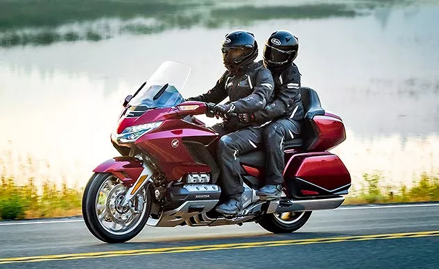

engine

When you turn on the ignition key, the engine comes to life. But have you ever wondered how an engine works? Modern-day engines generate power via internal combustion or controlled explosions. It is achieved by igniting the air-fuel mixture inside the engine's cylinders. This process is called the combustion cycle, and the process repeats thousands of times per minute to propel the car. A combustion cycle has four strokes (steps). Hence, modern-day engines are also called four-stroke engines. The four strokes include intake, compression, combustion and exhaust. Below are the detailed explanations of each stroke.
comfort
Sedans are known for their comfort, fuel efficiency, superb handling and impressive aerodynamics. They cater to a wide range of drivers, from those with families to those who value both performance and comfort. Let's explore some great reasons to choose a sedan.
indian roads with bike
If you want to explore the best road or the Indian highway, then it is undoubtedly the Yamuna Expressway. It is a 165 km long stretch connecting Delhi to Agra. It passes via Mathura, and thus you can visit some beautiful places in India on this route, like Agra Fort and Taj Mahal. There is no hindrance on this highway, and therefore people drive their vehicles at top gear on this road. But for a safe drive, you must maintain a certain speed limit, always! Pune-Mumbai Highway, NH4 If you are longing for a weekend drive while in Pune or Mumbai, then NH4 is the first option you must consider. It is completely picturesque where you can explore the nature closely while driving and playing your favourite song in your Sedan. You can also stay at Lonavala if you are thinking of taking a weekend trip after a 93 km drive.